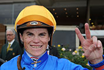

Raceday
Preparations for the race start early on raceday. Hear what the Trainer and Jockeys do pre-race and then lead a horse through the day.
Trainer
"On a typical raceday the strapper will bring the horse to the races. I’ll meet them there, in the stalls and check that everything is fine." - Justine HalesWhat's my role?
Looking after the day-to-day running of the yard, organizing the staff and raceday duties.


Jockey

"Once the gates open, the exhilaration and the planning and the fun starts to happen." - Craig WilliamsWhat's my role?
My role is to ride the horse in the race and provide any feedback tother owner and the trainer they couldn’t see from the tv.
Tap the active icons

Once you have clicked on each role and watched the video, the activity will be available.
Tap the active icons

Tap  to return to the menu
to return to the menu